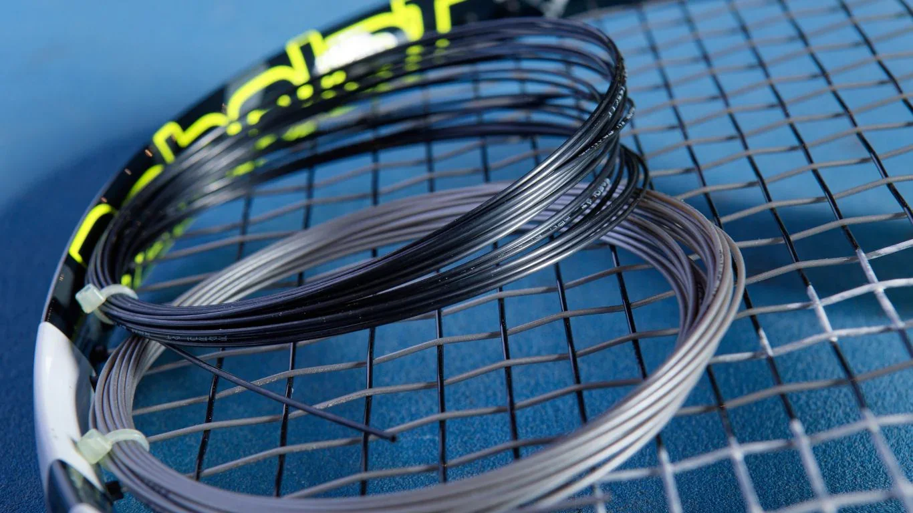
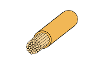
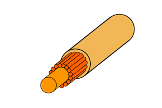
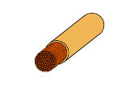
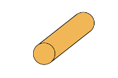

Choosing Tennis Racket Strings

INTRODUCTION
No matter your skill level in tennis—if you have played for a few years, a decade or have never touched a racket—selecting proper tennis racket strings can be intimidating. The importance of strings must also not be overlooked. Many professionals have even compared the metal racket frame to the body of a car and the strings to the engine! As the sport of tennis continues to evolve, new strings continue to develop rapidly. With each type of string, many with names corresponding to the brands (i.e. “Rev” or “Speed”), it can be confusing comparing and contrasting strings to understand which best aligns with your desires. With the variety of brands and types of strings, it is important to understand what tennis strings can do for your tennis play and why they can be so pivotal. What’s more, if you end up selecting a tennis string (perhaps you receive help this time from a tennis professional), in just a few months you may be due to once again need new tennis racket strings. This time, however, as your preferences and skills have changed, the optimal strings for you may have changed as well!
What’s the solution then? The strings that you need in order to play the sport,and that can improve
your play and comfort are complicated and seemingly shrouded in a landscape of complicated jargon…
That’s exactly where this website comes in. In the following sections I intend to breakdown the four
primary types of tennis racket strings that underly the tennis racket string market. These four
materials make up the majority of the tennis racket strings publicly available and offer an ideal
range of strengths and weaknesses that correspond to all aspects of the tennis game (strength, spin,
control, etc.).
Without further ado, let’s get right into it!
How Tennis Racket Strings Work
The most question you must be wondering at this point is how strings can impact so many areas of
your tennis game. For this, we must take a brief dive into how the strings operate. At their
core, tennis racket strings are the platform that simply transfers the energy from your racket
to the ball. In this case, as the racket strings hit into the ball, they stretch and form a
pocket around the ball. At the point when all of the kinetic energy from the ball traveling in
the opposite direction from the racket is transformed, for an instant (a micro-second!), the
ball stops in place. Then, faster than the blink of an eye, the stretched strings with their
significant potential energy quickly contract (or snap) back to their original position. This
snapping motion forces the ball in the opposite direction out of the string-pocket.
It is important to note one of the key forces described here, and one that we will explore
deeply, is the concept of tension. Among other features of tennis racket strings, the string
tension dramatically affects the tennis racket’s play.
[ADD IMAGES] String vibrations on a tennis racket. Different tensions and materials affect the performance.
MATERIALS
It is now necessary to take a dive into the makeup of tennis racket strings. This is the
differentiating factor that can demistify the racket string marketplace. We will break down each
type of material from the most common four: Natural Gut, Synthetic Gut (Nylon), Multifilament and
Polyester.
In order to have a consistent and comparable understanding of each racket string, core attributes
under consideration will include power, control, comfort, spin, price and durability.
Natural Gut
Cross section of natural gut string.
Natural gut strings are made from animal intestines and were first created by Pierre Babalot in
1874 -
he went on to found one of the largest tennis racket companies today! Best known for their
excellent playability and comfort, the strings seek to provide a balance of power and control,
rendering them a popular
choice among professional players. However, they are also by far the most expensive and are less
durable
compared to the other options.
Natural Gut Strings are also capable of withstanding relatively high tensions. We will dive into
the
importance of tension in a later section.
It is often reccomended that those recovering from arm injuries or with sensitive joints
consider using natural gut as it can help to absorb the shock from the ball.
Natural Gut String Qualities
| Natural Gut | |
|---|---|
| Power | High |
| Control | Moderate |
| Comfort | High |
| Durability | Low |
Synthetic Gut or Nylon
Cross section of synthetic gut string.
Synthetic gut strings are constructed from nylon and offer a decent balance of playability and durability at a lower price point. They are a versatile option suitable for players of all levels, providing decent power and control.
Synthetic Gut String Qualities
| Synthetic Gut | |
|---|---|
| Power | Moderate |
| Control | Moderate |
| Comfort | Moderate |
| Durability | Moderate |
Multifilament
Cross section of multigilament string.
FILL HERE
Multifilament String Qualities
| Multifilament | |
|---|---|
| Power | High |
| Control | Low |
| Comfort | High |
| Durability | Moderate |
Polyester
Cross section of polyester string.
FILL HERE
Polyester String Qualities
| Polyester | |
|---|---|
| Power | Low |
| Control | High |
| Comfort | Low |
| Durability | High |
TENSION
The tension of your tennis strings can greatly affect your performance. Lower tension strings provide more power and a larger sweet spot, while higher tension strings offer more control and spin potential. Finding the right tension depends on your playing style and preferences.
Overview of Specifications and Qualities by Tension Level
| Low Tension | Medium Tension | High Tension | |
|---|---|---|---|
| Power | High | Moderate | Low |
| Control | Low | Moderate | High |
| Comfort | High | Moderate | Low |
| Durability | Low | Moderate | High |
Low Tension
Low tension strings are ideal for players seeking more power and a larger sweet spot. They are easier on the arm and provide a comfortable feel, making them suitable for beginners and players with arm issues.

Low Tension Strings.
Medium Tension
Medium tension strings offer a balance between power and control. They are versatile and suitable for a wide range of playing styles, making them a popular choice among intermediate players.

Medium Tension Strings.
High Tension
High tension strings provide more control and spin potential, making them ideal for advanced players who generate their own power. They offer a firmer feel and are less forgiving on off-center hits.

High Tension Strings.
What Tension Is Best?
For beginner players, medium tension strings are a great starting point as they offer a good balance of power and control. As you gain experience, you can experiment with different tensions to find what works best for your playing style.
Advanced players may prefer high tension strings for the added control and spin potential. However, it's important to find a tension that feels comfortable and suits your game.
A Brief Note on Durability
FILL HERE
FILL HERE
CONCLUSION
Choosing the right tennis strings can greatly impact your performance on the court. For beginners, medium tension strings are a great starting point, offering a balance of power and control. Advanced players may benefit from high tension strings for added control and spin potential.
Experiment with different strings and tensions to find what works best for you. Remember, the right strings can enhance your game and make playing more enjoyable.
Still not sure where to start?
That's totally understandable! A lot of factors go into choosing your strings.
For a quick suggestion, take this short questionnaire.